Tổng Quan: Thành Phố Đáng Sống & Trái Tim Di Sản Miền Trung
Tọa lạc tại vị trí yết hầu của dải đất miền Trung, Đà Nẵng từ lâu đã khẳng định vị thế là đô thị biển năng động bậc nhất Việt Nam — nơi hội tụ hoàn hảo giữa non xanh nước biếc, hạ tầng du lịch đẳng cấp quốc tế và lòng hiếu khách nồng hậu của người dân xứ Quảng. Thành phố sở hữu đường bờ biển dài thoai thoải với bờ cát trắng mịn từng được tạp chí Forbes danh tiếng bình chọn là một trong những bãi biển quyến rũ nhất hành tinh.
Không chỉ có thiên nhiên tráng lệ, Đà Nẵng còn được mệnh danh là "Thành phố của những cây cầu kỷ lục": từ chiếc Cầu Sông Hàn quay 90 độ đầu tiên tại Việt Nam, Cầu Rồng phun lửa phun nước kỳ vĩ, Cầu Thuận Phước vươn mình ra vịnh biển cho đến Cầu Vàng sừng sững giữa ngàn mây Bà Nà Hills làm say đắm truyền thông quốc tế. Nơi đây đồng thời là tâm điểm kết nối ba Di sản Văn hóa Thế giới được UNESCO vinh danh: Cố đô Huế, Đô thị cổ Hội An và Thánh địa Mỹ Sơn.
💎 Điểm Nhấn Tinh Hoa Đà Nẵng
Thành phố năng động, xanh - sạch - đẹp, an ninh trật tự kiểu mẫu, bãi biển công cộng hoàn toàn miễn phí cùng hệ sinh thái ẩm thực phong phú với chi phí vô cùng hợp lý, đáp ứng trọn vẹn từ trải nghiệm nghỉ dưỡng 5 sao đến hành trình du lịch bụi tự do.
Vị Trí Địa Lý & Dấu Ấn Lịch Sử Dựng Xây Đô Thị
Về mặt địa lý, thành phố Đà Nẵng trải dài từ tọa độ 15°55' đến 16°14' vĩ độ Bắc và từ 107°55' đến 108°20' kinh độ Đông. Phía Bắc giáp tỉnh Thừa Thiên Huế qua ranh giới tự nhiên hiểm trở của đèo Hải Vân; phía Tây và Nam giáp tỉnh Quảng Nam; phía Đông mở rộng ra Biển Đông lộng gió. Đặc biệt, theo Nghị định số 07/CP ngày 23/01/1997 của Chính phủ, huyện đảo Hoàng Sa là đơn vị hành chính thiêng liêng trực thuộc thành phố Đà Nẵng, khẳng định chủ quyền lãnh thổ bất khả xâm phạm của Tổ quốc.
Trải qua hàng trăm năm lịch sử, từ cửa ngõ giao thương sông Hàn và vịnh Tourane thời nhà Nguyễn đến thương cảng quân sự chiến lược trong hai cuộc kháng chiến vệ quốc, Đà Nẵng đã có bước chuyển mình kỳ tích. Sau ngày chia tách tỉnh Quảng Nam - Đà Nẵng năm 1997, thành phố đã thực hiện cuộc cách mạng chỉnh trang đô thị ngoạn mục, biến những làng chài nghèo nàn thành đại lộ thênh thang và chuỗi resort ven biển hàng đầu châu Á.
• Nghị quyết số 43-NQ/TW ngày 24/01/2019 của Bộ Chính trị: Xác định xây dựng Đà Nẵng trở thành đô thị sinh thái, hiện đại, thông minh và trung tâm du lịch quốc tế của cả nước.
• Quyết định số 1288/QĐ-TTg ngày 02/11/2023 của Thủ tướng Chính phủ: Phê duyệt Quy hoạch thành phố Đà Nẵng thời kỳ 2021 - 2030, tầm nhìn đến 2050 làm trung tâm du lịch nghỉ dưỡng biển cao cấp và dịch vụ chất lượng cao.
• Quyết định số 1820/QĐ-TTg ngày 24/12/2018 của Thủ tướng Chính phủ: Xếp hạng Danh lam thắng cảnh Ngũ Hành Sơn là Di tích Quốc gia Đặc biệt.
• Quyết định số 2619/QĐ-BVHTTDL ngày 10/11/2023 của Bộ VH-TT-DL: Đưa Nghề làm nước mắm Nam Ô vào Danh mục Di sản văn hóa phi vật thể quốc gia.
• Quyết định số 1059/QĐ-BVHTTDL ngày 27/05/2021: Công nhận Lễ hội Quán Thế Âm Ngũ Hành Sơn là Di sản văn hóa phi vật thể quốc gia.
Huyền Thoại & Truyền Tích Dân Gian Vùng Đất
Gắn liền với địa hình sơn thủy hữu tình, Đà Nẵng là mảnh đất ấp ủ những huyền tích lung linh được lưu truyền qua nhiều thế hệ:
- Huyền tích Trứng Rồng sinh Ngũ Hành Sơn: Truyền thuyết kể rằng thuở khai thiên lập địa, một con rồng thần khổng lồ từ biển Đông bay vào bờ đẻ một quả trứng ngọc rồi bay đi. Một cụ già đạo hạnh đã được thần Kim Quy trao cho một chiếc móng rồng để bảo vệ quả trứng trước móng vuốt chim ưng. Khi trứng nở thành một thiếu nữ xinh đẹp tuyệt trần, vỏ trứng vỡ ra thành 5 mảnh đá cẩm thạch hóa thành 5 ngọn núi Ngũ Hành kỳ vĩ: Kim Sơn, Mộc Sơn, Thủy Sơn, Hỏa Sơn và Thổ Sơn.
- Truyền thuyết Bàn Cờ Tiên đỉnh Sơn Trà: Trên đỉnh cao 696m của bán đảo Sơn Trà quanh năm mây phủ, hai vị tiên ông Đế Thích và Bát Tiên giáng trần ngồi đánh cờ nhiều ngày bất phân thắng bại. Bỗng một ngày nọ, những nàng tiên nữ giáng trần tắm tại bãi Tiên Sa bên dưới, tiếng cười đùa làm một vị tiên lơ là đánh sai một nước cờ dẫn đến thua cuộc. Giận mình, tiên ông đập bàn cờ bay về trời, để lại phiến đá bàn cờ trầm mặc giữa biển mây.
- Huyền thoại Giếng Tiên & Bãi rạn Nam Ô: Nơi dòng sông Cu Đê đổ ra biển lớn gắn với dấu chân mở cõi của Huyền Trân Công chúa và các bậc tiền nhân khai hoang, tích trữ nguồn nước ngọt tinh khiết từ giếng tiên cổ để ủ chượp nên hương vị nước mắm cá cơm Nam Ô danh bất hư truyền.
Chuỗi Hình Ảnh 4 Mùa Du Lịch Đà Nẵng Tuyệt Mỹ
Khí hậu Đà Nẵng mang tính chất nhiệt đới gió mùa chan hòa nắng ấm, với mỗi mùa trong năm lại khoác lên mình một diện mạo quyến rũ riêng biệt. Dưới đây là bộ ảnh 4 mùa độc bản tái hiện trọn vẹn nhịp thở thiên nhiên thành phố biển:
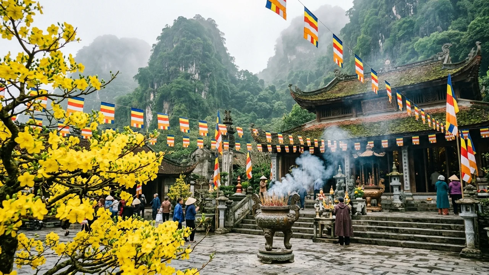
Tháng 1 - Tháng 3 • Mùa XuânMùa Xuân: Lễ Hội Linh Thiêng & Mai Vàng Khoe Sắc
Tiết trời dịu mát, nắng xuân dịu dàng. Hàng vạn du khách trẩy hội Quán Thế Âm Ngũ Hành Sơn (Di sản phi vật thể quốc gia) và chiêm bái Linh Ứng Bãi Bụt cầu bình an năm mới.
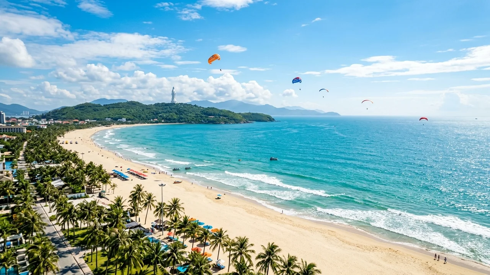
Tháng 4 - Tháng 8 • Mùa HạMùa Hạ: Nắng Vàng Rực Rỡ & Lễ Hội Pháo Hoa DIFF
Mùa cao điểm du lịch rực rỡ nhất: biển Mỹ Khe trong vắt quyến rũ, chèo SUP lặn ngắm san hô Sơn Trà và thưởng thức đại tiệc âm thanh ánh sáng Pháo hoa Quốc tế bên sông Hàn.
Mùa Thu: Hoàng Hôn Lãng Mạn & Phố Đêm Lộng Gió
Không khí thanh bình, ánh chiều tà dát vàng lên cây cầu dây võng Thuận Phước. Khoảnh khắc lý tưởng để tản bộ ven đường Bạch Đằng ngắm nhịp sống thị dân êm đềm.
Mùa Đông: Săn Biển Mây Bồng Bềnh & Ẩm Thực Ấm Nồng
Thời tiết se lạnh 19-22°C đưa du khách lên đỉnh Bàn Cờ ngắm mây trôi bềnh bồng, sau đó về phố thưởng thức tô bún chả cá sôi sùng sục và đĩa bánh xèo giòn rụm.
Top 10 Thắng Cảnh Biểu Tượng Nhất Định Phải Đến
Đà Nẵng sở hữu hệ thống danh lam thắng cảnh đa dạng hiếm có, từ công trình kỳ vĩ nhân tạo trên đỉnh núi cao đến rừng nguyên sinh ôm trọn bờ biển ngọc bích:
1. Sun World Ba Na Hills & Cầu Vàng Bàn Tay Khổng Lồ
Tọa lạc trên đỉnh núi Chúa ở độ cao gần 1.500m với khí hậu 4 mùa trong 1 ngày. Cầu Vàng nổi tiếng toàn cầu như một dải lụa vàng lơ lửng giữa lưng chừng trời, cùng Làng Pháp cổ kính và hầm rượu Debay trăm năm.
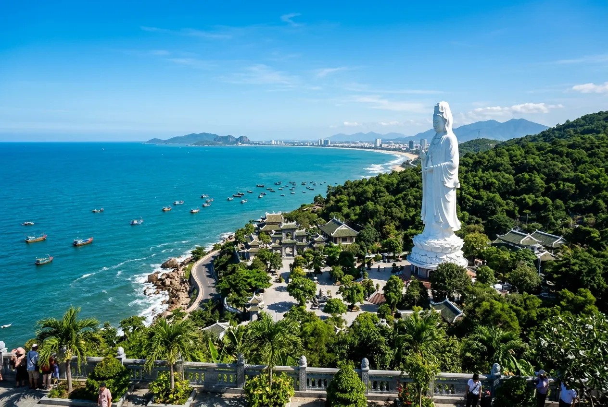
2. Bán Đảo Sơn Trà & Đỉnh Bàn Cờ
Khu bảo tồn thiên nhiên kỳ vĩ nhô ra biển Đông, nơi gặp gỡ giữa tiên ông đánh cờ trên đỉnh mây và vương quốc của loài Voọc chà vá chân nâu - 'nữ hoàng linh trưởng'.
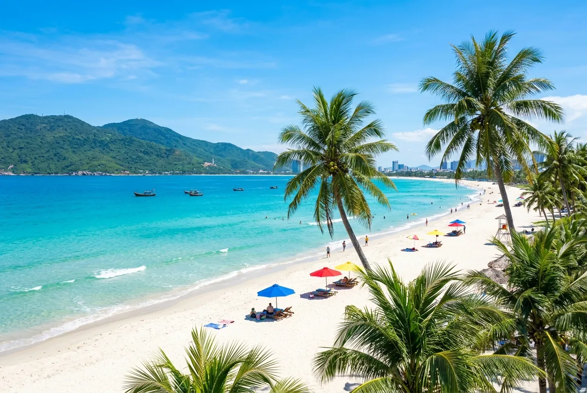
3. Bãi Biển Mỹ Khe (Top Hành Tinh)
Bờ cát trắng mịn thoai thoải trải dài gần 10km, sóng êm ả và nước ấm quanh năm, thiên đường lướt sóng, dù lượn và tắm biển chuẩn quốc tế.
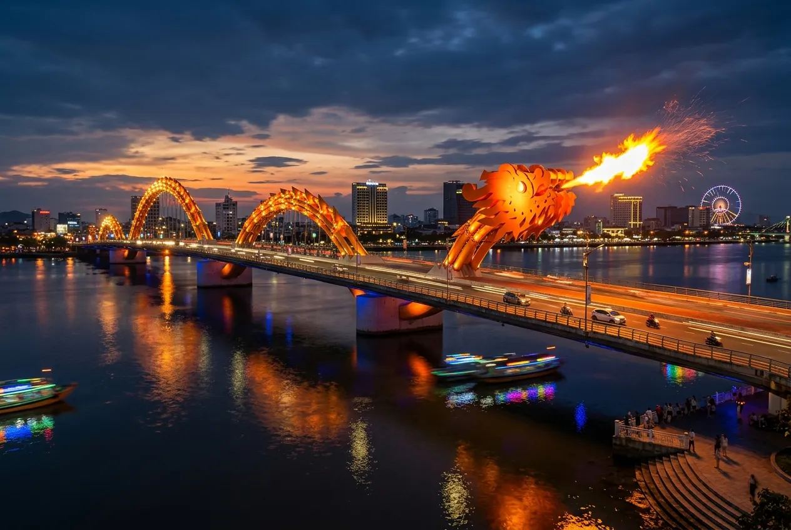
4. Cầu Rồng Phun Lửa, Nước & Cầu Sông Hàn Quay — Kỳ Tích Đô Thị Sông Hàn
Bộ đôi cây cầu biểu tượng cho sức trẻ và lòng đồng thuận của người dân Đà Nẵng. Chiêm ngưỡng Rồng vàng phun lửa, nước sống động và ngắm nhịp cầu sông Hàn quay 90 độ lung linh huyền ảo trong đêm.
5. Đèo Hải Vân & Hải Vân Quan
Cung đèo hiểm trở và ngoạn mục bậc nhất thế giới, nơi cửa ải cổ kính 1826 đứng sừng sững giữa ranh giới trời mây và biển biếc.
6. Chùa Linh Ứng Bãi Bụt & Tượng Phật 67m
Chốn thiền môn thanh tịnh ngự trên triền bán đảo Sơn Trà, nơi pho đại tượng Phật Bà cao 67m đứng từ bi chở che cho vạn dặm sóng yên biển lặng.
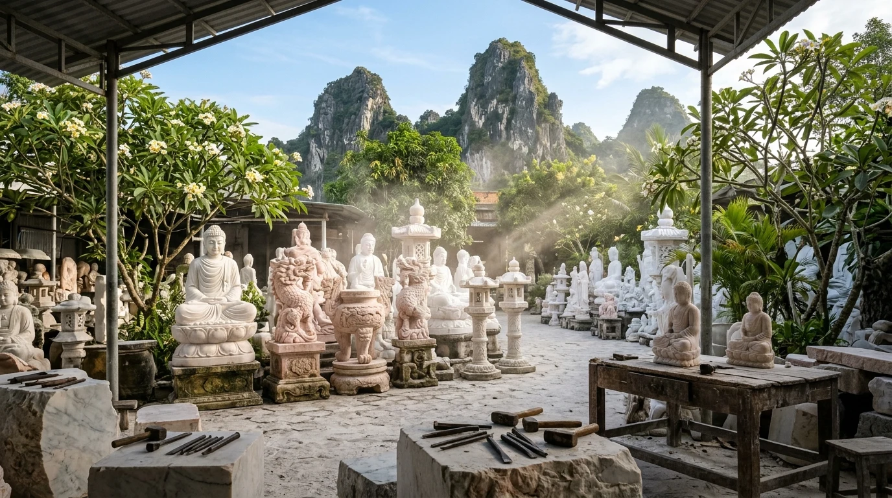
7. Làng Đá Mỹ Nghệ Non Nước — Di Sản Phi Vật Thể Quốc Gia 400 Năm
Làng nghề điêu khắc đá cẩm thạch trứ danh dưới chân núi Ngũ Hành Sơn khởi lập từ thế kỷ XVII, nơi những bàn tay nghệ nhân thổi hồn vào từng khối đá cẩm thạch vô tri thành các tuyệt tác nghệ thuật uy nghiêm.
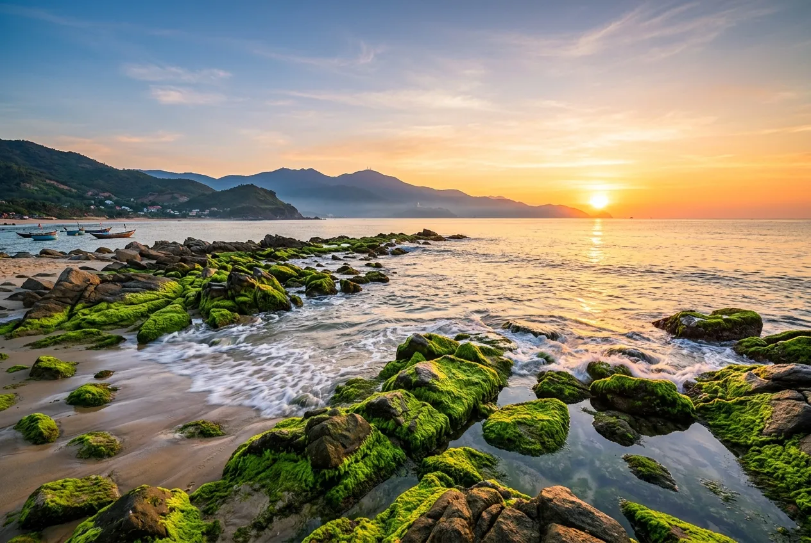
8. Rạn Nam Ô & Làng Mắm Cổ Truyền
Bãi đá rêu xanh ma mị đón sóng biển đầu xuân, hòa cùng hương vị giọt nước mắm nhĩ cá cơm than trăm năm đượm tình làng chài cổ xứ Quảng.
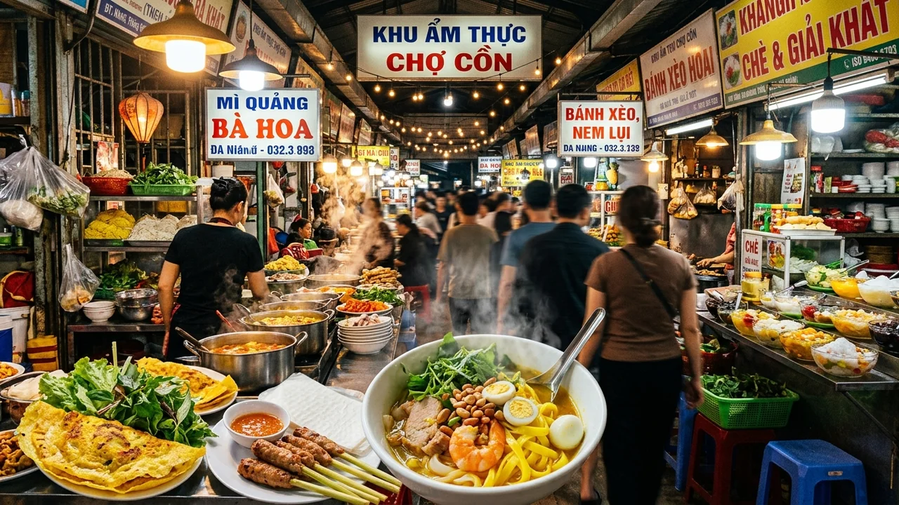
9. Chợ Cồn & Chợ Hàn
Thiên đường ẩm thực đường phố và chợ truyền thống sầm uất bậc nhất miền Trung, nơi nếm trọn hương vị mì Quảng, bánh bèo, chả bò và các món quà xứ Nẫu.
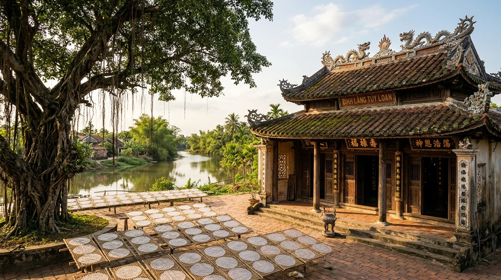
10. Làng Cổ Túy Loan 500 Năm — Trầm Tích Đất Quảng Bên Dòng Sông Hàn
Ngôi làng cổ hơn nửa thiên niên kỷ bên dòng sông Túy Loan êm đềm, nơi lưu giữ đình làng cổ linh thiêng, cây đa bến nước sân đình và nghề tráng bánh tráng bếp trấu đượm khói thơm.
Cẩm Nang Di Chuyển & Cung Đường Giao Thông
Là đầu mối giao thông của cả nước, việc tiếp cận Đà Nẵng vô cùng thuận tiện qua cả 4 đường: hàng không, đường sắt, đường bộ và đường biển:
- Đường hàng không (Sân bay Quốc tế Đà Nẵng - DAD): Nằm ngay trong lòng nội đô, cách bãi biển Mỹ Khe chỉ 5km. Có các đường bay thẳng dày đặc từ Hà Nội, TP.HCM, Hải Phòng, Cần Thơ (thời gian bay 1h15 - 1h30) với giá vé khứ hồi dao động từ 1.200.000 - 2.800.000 VNĐ.
- Đường sắt Bắc - Nam (Ga Đà Nẵng): Tuyến tàu Thống Nhất đưa du khách qua đoạn đèo Hải Vân kỳ vĩ — một trong những cung đường sắt ven biển đẹp nhất thế giới. Điểm đến ngay tại trung tâm quận Thanh Khê.
-
Phương tiện đi lại nội đô:
• Thuê xe máy: Từ 100.000 - 150.000 VNĐ/ngày (giao nhận xe tận sân bay/khách sạn).
• Taxi & Grab: Rất phổ biến, minh bạch giá cả, gọi xe chỉ trong 2-3 phút.
• Xe buýt du lịch & Xe buýt điện DanangBus: Mạng lưới tuyến phủ khắp các điểm danh thắng nội thành và kết nối thẳng sang Phố cổ Hội An.
⚠️ Lưu Ý An Toàn Giao Thông Sơn Trà
Từ năm 2019, Ban Quản lý Bán đảo Sơn Trà cấm hoàn toàn xe máy tay ga lưu thông trên các đoạn dốc hiểm trở (đoạn từ trạm phát sóng lên Đỉnh Bàn Cờ và đoạn qua Cây đa ngàn năm) để tránh tai nạn do mất phanh. Du khách hãy chọn xe số, xe côn tay hoặc xe trung chuyển.
Tinh Hoa Ẩm Thực Đà Nẵng — Đậm Đà Dư Vị Xứ Quảng
Ẩm thực Đà Nẵng là sự giao thoa hài hòa giữa phong vị biển khơi tươi rói và nghệ thuật gia vị nồng nàn đặc trưng của đất Quảng. Dưới đây là 6 món ngon trứ danh nhất định phải thử:
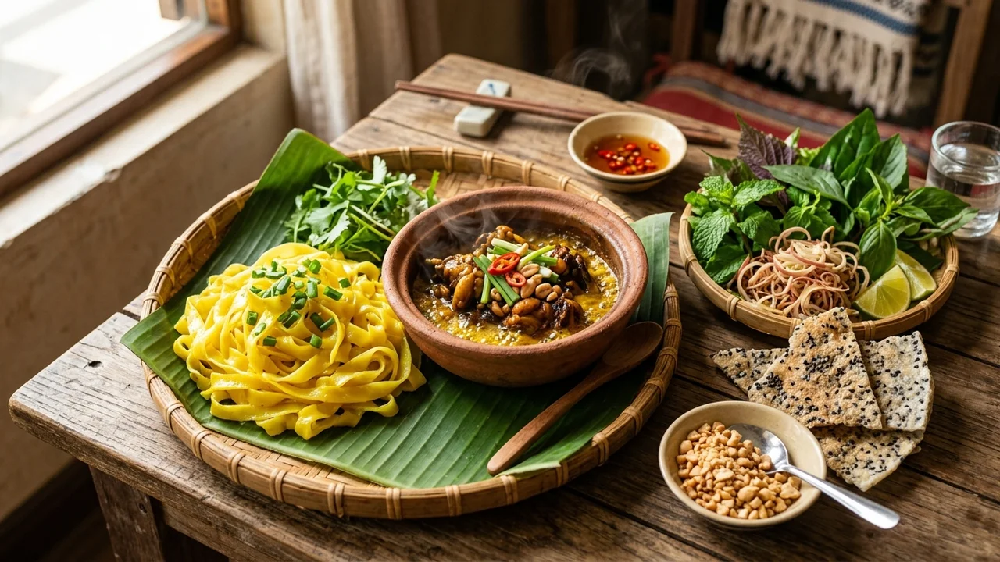
1. Mì Quảng Ếch & Mì Quảng Truyền Thống
Món ăn linh hồn xứ Quảng với sợi mì gạo dày dai nhuộm nghệ, nước nhưn om tôm, thịt heo hoặc ếch đồng đậm đà chỉ chan xâm xấp đáy tô, rắc đậu phộng rang giòn và ăn kèm bánh tráng mè nướng thơm lừng.
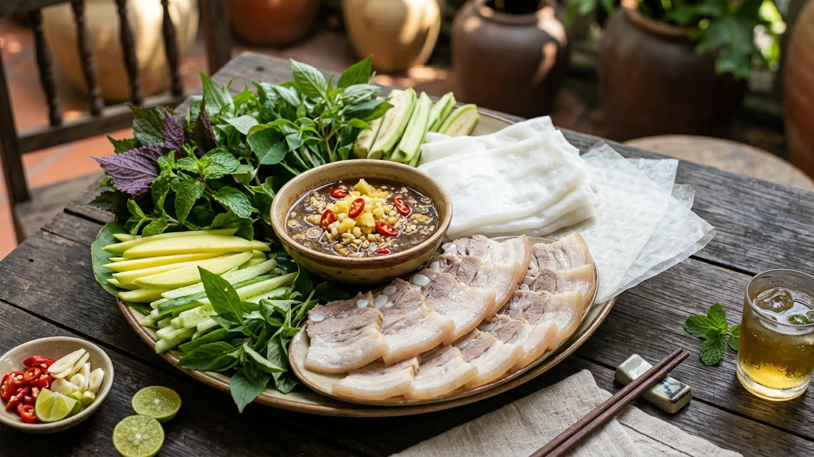
2. Bánh Tráng Cuốn Thịt Heo Hai Đầu Da
Đặc sản nức tiếng với kỹ thuật luộc thịt tài tình giữ cho hai đầu mỡ trong veo, cuốn cùng lá bánh tráng phơi sương Đại Lộc dẻo dai, lát phở mỏng, dưa leo, xoài xanh và rổ rau ghém đồ sộ chấm mắm nêm cá cơm nguyên chất.
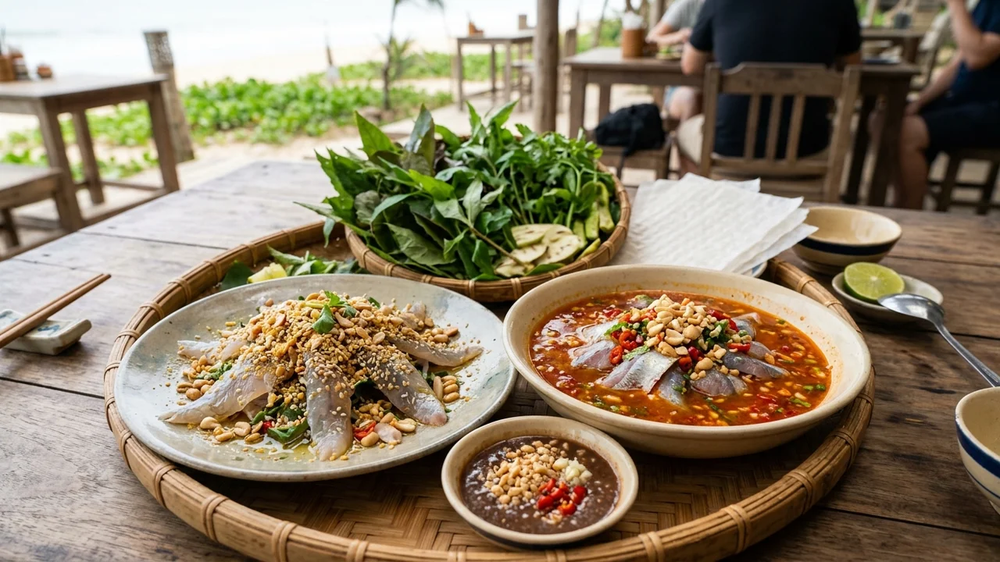
3. Gỏi Cá Nam Ô (Gỏi Khô & Gỏi Ướt)
Được ví như "sashimi xứ Quảng", cá trích tươi sống vừa đánh bắt tại rạn Nam Ô được lọc xương khéo léo. Gỏi khô phủ thính đậu phộng mè vàng ươm; gỏi ướt thấm đẫm nước sốt mắm ớt gừng cay tê, cuốn cùng lá rừng Sơn Trà.
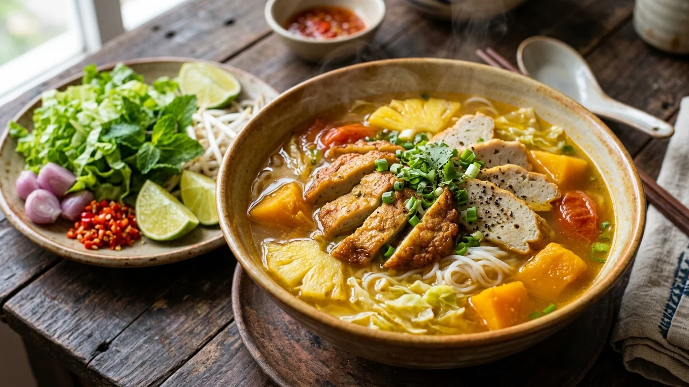
4. Bún Chả Cá Đà Nẵng
Món ăn sáng quen thuộc mà say lòng người với nước dùng nấu từ xương cá biển, bí đỏ, bắp cải, cà chua và măng tươi ngọt thanh tự nhiên. Chả cá mối, cá thu quết tay chiên vàng ruộm hoặc hấp dai giòn sần sật.
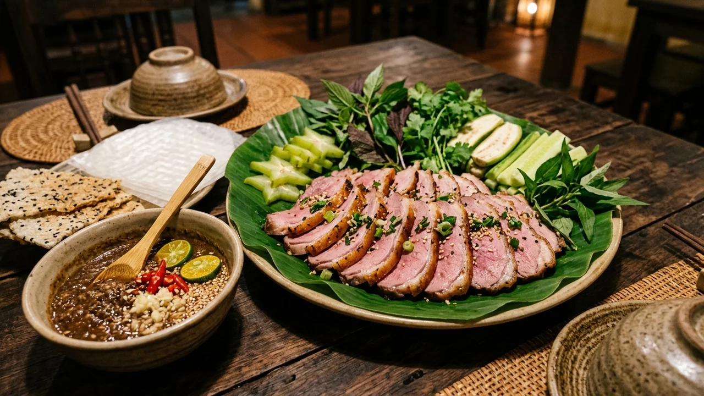
5. Bê Thui Cầu Mống (Thịt Tái Hồng Bì Giòn)
Bê non nguyên con được thui khéo léo trên than củi hồng để da vàng giòn tan mà thớ thịt bên trong vẫn giữ màu hồng đào mềm mọng ngọt lịm. Cuốn cùng khế chua, chuối chát, rau sống và chấm chén mắm cái cá cơm dầm tỏi ớt.
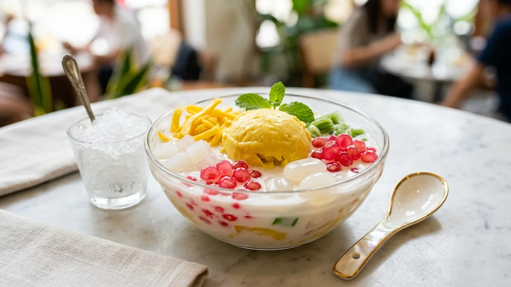
6. Chè Thái Sầu Riêng Liên (Chè Sầu Đà Nẵng)
Thương hiệu chè giải nhiệt huyền thoại gây thương nhớ khắp cả nước. Vị ngọt thanh béo ngậy của nước cốt dừa tươi quyện cùng cơm sầu riêng Đắk Lắk vàng tươi đậm đà, thạch dừa giòn sần sật và mít xắt sợi thanh mát.
Bảng Giá Vé Tham Quan & Dịch Vụ Niêm Yết
Bảng tổng hợp mức giá vé niêm yết chính thức áp dụng tại các điểm du lịch tiêu biểu tại Đà Nẵng (cập nhật mới nhất):
| Tên Điểm Đến / Dịch Vụ | Đối Tượng Áp Dụng | Mức Giá Niêm Yết | Ghi Chú & Chính Sách Miễn Giảm |
|---|---|---|---|
| Sun World Ba Na Hills (Cáp treo + Cầu Vàng + Fantasy Park) | Khách ngoại tỉnh / Quốc tế | 900.000 VNĐ/người lớn 750.000 VNĐ/trẻ em |
Trẻ em dưới 1m: Miễn phí. Người Đà Nẵng: 600.000 VNĐ/người lớn. |
| Danh thắng Ngũ Hành Sơn | Người lớn Học sinh / Sinh viên |
40.000 VNĐ/lượt 10.000 VNĐ/lượt |
Thang máy khứ hồi: 30.000 VNĐ. Vé Động Âm Phủ: 20.000 VNĐ/người. |
| Bảo tàng Điêu khắc Chăm | Người lớn Học sinh / Sinh viên |
60.000 VNĐ/lượt 10.000 VNĐ/lượt |
Bao gồm máy thuyết minh tự động Audio Guide đa ngôn ngữ. |
| Di tích Hải Vân Quan | Du khách trong & ngoài nước | 70.000 VNĐ/lượt | Áp dụng theo nghị quyết thống nhất giữa Đà Nẵng & Thừa Thiên Huế. |
| Du thuyền ngắm cảnh Sông Hàn | Khách du lịch | 150.000 - 200.000 VNĐ/lượt | Hành trình 45 phút, xem múa Chăm, xem Cầu Rồng phun lửa cuối tuần. |
| Bãi biển Mỹ Khe, Phạm Văn Đồng | Tất cả người dân & du khách | MIỄN PHÍ 100% | Tắm biển tự do, có phao an toàn và nhân viên cứu hộ túc trực. |
⚖️ Chính Sách Miễn / Giảm Vé Theo Quy Định Nhà Nước
Thực hiện nghiêm túc Nghị định của Chính phủ và quy định của UBND thành phố Đà Nẵng: Miễn phí 100% vé tham quan tại các di tích công cộng đối với người có công với cách mạng, Bà mẹ Việt Nam Anh hùng, thương binh, người khuyết tật đặc biệt nặng và trẻ em dưới 6 tuổi.
Gợi Ý Lịch Trình 4N3Đ & Mẹo Du Lịch Bản Địa An Toàn
Lịch trình tối ưu hóa trải nghiệm kết hợp tắm biển nghỉ dưỡng, khám phá di sản và vui chơi giải trí đỉnh cao:
📅 Ngày 1: Đón Chào Đà Nẵng — Bán Đảo Sơn Trà — Tắm Biển Mỹ Khe — Cầu Rồng
• Sáng: Đến sân bay Đà Nẵng, nhận phòng khách sạn ven biển Võ Nguyên Giáp, thưởng thức tô mì Quảng ếch Bếp Trang nóng hổi.
• Chiều: Lên bán đảo Sơn Trà viếng Chùa Linh Ứng Bãi Bụt, ngắm tượng Phật Bà 67m trông ra biển Đông. Sau đó về bãi tắm Mỹ Khe thả mình vào làn nước mát.
• Tối: Ăn hải sản tươi sống Năm Đảnh hoặc Bé Mặn, dạo bến sông Hàn ngắm Cầu Rồng phun lửa phun nước lúc 21h00.
📅 Ngày 2: Chinh Phục Núi Chúa Bà Nà Hills — Cầu Vàng — Chợ Đêm Helio
• Sáng: Lên cáp treo Bà Nà Hills sớm trước 8h30 để ngắm Cầu Vàng không gian vắng người, tham quan vườn hoa Le Jardin D'Amour và hầm rượu Pháp.
• Chiều: Khám phá Làng Pháp cổ kính, vui chơi tại Fantasy Park và thưởng thức buffet ẩm thực quốc tế.
• Tối: Trở về trung tâm dạo chợ đêm ẩm thực Helio náo nhiệt, thưởng thức bát chè sầu Liên ngọt mát.
📅 Ngày 3: Danh Thắng Ngũ Hành Sơn — Làng Đá Non Nước — Kết Nối Hội An
• Sáng: Khám phá Quần thể Di tích Quốc gia Đặc biệt Ngũ Hành Sơn, leo lên Động Huyền Không ngắm tia nắng trời rọi chiếu linh thiêng, ghé Làng điêu khắc đá Non Nước.
• Chiều: Thưởng thức bánh tráng cuốn thịt heo hai đầu da, sau đó di chuyển 25km vào Phố cổ Hội An tản bộ ngắm hoa đăng sông Hoài.
• Tối: Thưởng thức cao lầu Hội An, đón gió đêm trở về khách sạn Đà Nẵng nghỉ ngơi.
📅 Ngày 4: Rạn Nam Ô — Mua Sắm Chợ Cồn / Chợ Hàn — Tạm Biệt Đà Nẵng
• Sáng: Ghé Rạn Nam Ô check-in bãi đá rêu xanh, thưởng thức tô gỏi cá Nam Ô tươi giòn trứ danh.
• Trưa: Tới Chợ Cồn làm một chuyến food tour bánh xèo, nem lụi, bún mắm nêm; ghé Chợ Hàn mua chả bò và mực một nắng làm quà.
• Chiều: Trả phòng khách sạn, di chuyển ra sân bay Đà Nẵng kết thúc chuyến đi trọn vẹn và an toàn.
💡 Mẹo Bản Địa Tránh Rủi Ro & Quy Tắc Văn Minh Du Lịch
- An toàn khi tắm biển: Luôn tắm trong khu vực cờ hiệu giới hạn an toàn của đội cứu hộ; tuyệt đối không tắm khi có cờ đỏ cảnh báo dòng chảy xa bờ (Rip current).
- Bảo vệ động vật hoang dã Sơn Trà: Tuyệt đối không cho khỉ hay vọoc ăn thức ăn của con người; không ném đá xua đuổi làm kích động đàn khỉ.
- Cấm xe tay ga đường dốc Sơn Trà: Tuyệt đối tuân thủ chỉ dẫn của trạm gác kiểm lâm, không sử dụng xe tay ga leo đỉnh Bàn Cờ.
- Mua sắm đặc sản minh bạch: Tại Chợ Cồn và Chợ Hàn, các gian hàng đều niêm yết giá; bạn có thể hỏi giá trước và nếm thử mắm nêm, chả bò thoải mái trước khi mua.